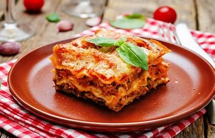

Home
Lasagna

Description
Lasagna is a hearty, comforting Italian dish made up of layers of wide pasta sheets, savory meat or vegetable fillings, and rich sauces. The traditional version often features a combination of ground beef or pork, seasoned with garlic, onions, and herbs, and simmered in a flavorful tomato-based marinara sauce. The filling is then sandwiched between sheets of pasta, often with a creamy, tangy layer of béchamel sauce or ricotta cheese. The layers are stacked together and baked until golden, bubbly, and perfectly melded.
This dish is a versatile classic, with numerous regional variations. Some recipes substitute the meat with vegetables like spinach or zucchini, while others may incorporate a blend of cheeses or different kinds of sauces, like a pesto or white sauce. The result is a rich and indulgent meal that balances hearty, satisfying textures with bright, savory flavors. Lasagna is often served as a main course, making it a popular choice for gatherings and celebrations, where its comforting nature makes it a favorite for many.
Ingredients
- Lasagna noodles (about 12 sheets, cooked or no-boil)
- Ground beef (1 lb) or ground pork (optional: mix of both)
- Onion (1 medium, finely chopped)
- Garlic (3 cloves, minced)
- Tomato sauce (24 oz)
- Crushed tomatoes (14 oz)
- Tomato paste (2 tbsp)
- Olive oil (for cooking)
- Dried basil (1 tsp)
- Dried oregano (1 tsp)
- Salt and pepper (to taste)
- Ricotta cheese (15 oz)
- Mozzarella cheese (2 cups, shredded)
- Parmesan cheese (1 cup, grated)
- Egg (1, beaten)
- Béchamel sauce (optional, for creamy layers)
Steps
- Prepare the sauce:
- Heat olive oil in a large pan over medium heat. Add chopped onion and cook until softened (about 5 minutes).
- Add minced garlic and cook for another minute until fragrant.
- Add the ground beef (or pork) and cook until browned, breaking it up into small pieces.
- Stir in the tomato sauce, crushed tomatoes, tomato paste, basil, oregano, salt, and pepper. Simmer on low heat for about 20-30 minutes to blend the flavors.
- Cook the noodles:
- While the sauce is simmering, cook the lasagna noodles according to package instructions. If using regular noodles, drain them and lay them flat on a baking sheet to prevent sticking. If using no-boil noodles, skip this step.
- Prepare the cheese mixture:
- In a bowl, combine the ricotta cheese, 1 cup of the shredded mozzarella, the grated Parmesan, and the beaten egg. Mix until well combined. Add salt and pepper to taste.
- Assemble the lasagna:
- Preheat your oven to 375°F (190°C).
- In a large baking dish, spread a thin layer of the meat sauce on the bottom.
- Add a layer of lasagna noodles on top of the sauce.
- Spread a layer of the ricotta cheese mixture over the noodles.
- Add a layer of meat sauce on top of the ricotta.
- Sprinkle a layer of mozzarella cheese.
- Repeat the layering process, finishing with a layer of noodles, sauce, and mozzarella cheese on top.
- Bake the lasagna:
- Cover the baking dish with aluminum foil (to prevent the cheese from burning) and bake for 30 minutes.
- After 30 minutes, remove the foil and bake for an additional 15-20 minutes, or until the top is golden and bubbly.
- Let the lasagna cool for about 10 minutes before slicing and serving.